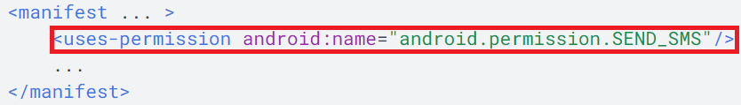
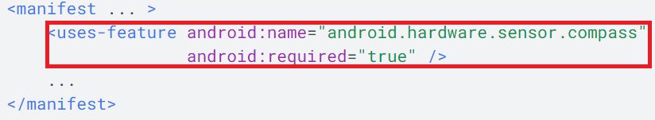
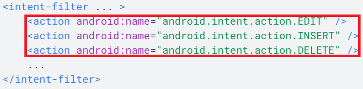
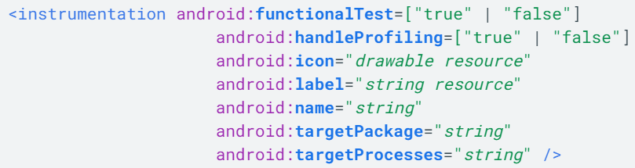
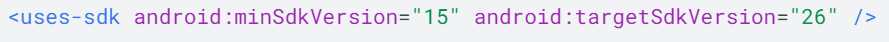
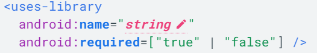
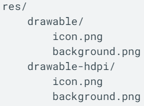

Título: Manifiesto de una app
Todos los proyectos de apps deben tener un archivo AndroidManifest.xml en la raíz de la fuente del proyecto. El archivo de manifiesto describe información esencial de tu aplicación para las herramientas de creación de Android, el sistema operativo Android y Google Play.
Entre muchas otras cosas, el archivo de manifiesto debe declarar lo siguiente:
Nombre del paquete de Java, que se utiliza como identificador único de la aplicación en el sistema y en Google Play.

Componentes de la aplicación, que incluyen todas las actividades, servicios, receptores de emisiones y proveedores de contenido. También puede declarar capacidades, como las configuraciones de dispositivos que puede manejar, además de filtros de intents que describen cómo se puede iniciar el componente.

Permisos que necesita la aplicación para acceder a las partes protegidas del sistema o a otras aplicaciones. También declara cualquier permiso que otras aplicaciones deben tener si quieren acceder al contenido de esta aplicación.

Funciones de hardware y software que requiere la aplicación afectan a los dispositivos que pueden instalar la aplicación desde Google Play. Obtén más información sobre la compatibilidad de dispositivos.

Procesos que alojan los componentes de la aplicación.
Procesos que alojan los componentes de la aplicación.

Clases Instrumentation que proporcionan un perfil y otra información mientras la aplicación se ejecuta.

Nivel mínimo de Android API que requiere la aplicación.

Bibliotecas que deben estar vinculadas con la aplicación.
En Android Studio se genera el archivo de manifiesto automáticamente, y la mayoría de los elementos esenciales de este se irán agregando a medida que se compila la aplicación.
Referencia de los elementos del manifiesto:
La siguiente tabla proporciona vínculos a los documentos de referencia de todos los elementos válidos del archivo AndroidManifest.xml.
| Nombre | Definición |
|---|---|
| < action > | Agrega una acción a un filtro de intent. |
| < activity > | Declara el componente de una actividad. |
|
< activity- alias > |
Declara el alias de una actividad. |
| < application > | Es la declaración de la aplicación. |
| < category > | Agrega el nombre de una categoría a un filtro de intent. |
|
< compatible- screens > |
Especifica cada configuración de pantalla con la que es compatible la aplicación. |
| < data > | Agrega especificaciones de datos a un filtro de intent. |
|
< grant-uri- permission > |
Especifica los subconjuntos de datos de aplicaciones a los que el proveedor de contenido principal tiene permiso para acceder. |
| < instrumentation > | Declara una clase Instrumentation que te permite supervisar la interacción de una aplicación con el sistema. |
| < intent-filter > | Especifica los tipos de intents a los que puede responder una actividad, un servicio o un receptor de emisión. |
| < manifest > | Es el elemento raíz del archivo AndroidManifest.xml. |
| < meta-data > | Es un par nombre-valor para un elemento de datos adicionales y arbitrarios que se pueden suministrar al componente superior. |
|
< path- permission > |
Define la ruta y los permisos necesarios para un subconjunto específico de datos dentro de un proveedor de contenido. |
| < permission > | Declara un permiso de seguridad que puede utilizarse para limitar el acceso a componentes o funciones específicas de esta u otras aplicaciones. |
|
< permission- group > |
Declara un nombre para una agrupación lógica de permisos relacionados. |
|
< permission- tree > |
Declara el nombre base de un árbol de permisos. |
| < provider > | Declara el componente de un proveedor de contenido. |
| < receiver > | Declara el componente de un receptor de emisión. |
| < service > | Declara el componente de un servicio. |
|
< supports-gl- texture > |
Declara un único formato de compresión de textura GL que admite la aplicación. |
|
< |
Declara los tamaños de pantalla que admite tu aplicación y habilita el modo de compatibilidad para pantallas más grandes que las que admite tu aplicación. |
|
< uses- configuration > |
Indica las funciones específicas de entrada que requiere la aplicación. |
|
< |
Declara una sola función de hardware o software que usa la aplicación. |
|
< uses- library > |
Especifica una biblioteca compartida con la que debe vincularse la aplicación. |
|
< |
Especifica un permiso de sistema que debe conceder el usuario para que la aplicación funcione correctamente. |
|
< uses- permission- sdk-23 > |
Especifica que una app desea un permiso particular, pero solo si esta se ejecuta en un dispositivo que ejecuta Android 6.0 (nivel de API 23) o versiones posteriores. |
| < uses-sdk > | Te permite expresar la compatibilidad de una aplicación con una o más versiones de la plataforma Android, a través de un valor entero de nivel de API. |
Recursos
Los recursos son los archivos adicionales y el contenido estático que usa el código, como mapas de bits, definiciones de diseño, strings de interfaz de usuario, instrucciones de animación, etc. Siempre se debe externalizar los recursos para aplicaciones, como imágenes y strings del código, para que se los pueda mantener de forma independiente. También se debe proporcionar recursos alternativos para configuraciones de dispositivos específicos, agrupándolos en directorios de recursos con un nombre especial.
En tiempo de ejecución, Android utiliza el recurso adecuado según la configuración actual. Por ejemplo, puedes proporcionar un diseño de interfaz de usuario (IU) diferente según el tamaño de la pantalla o strings diferentes según la configuración de idioma. Una vez que se externaliza los recursos para la aplicación, se accede a ellos mediante los ID de recursos que se generan en la clase R del proyecto.
A continuación, se presenta una tabla con los tipos de recursos admitidos dentro del directorio /res:
| Directorio | Tipo de recurso |
|---|---|
| animator/ | Archivos XML que definen animaciones de propiedades. |
| anim/ | Archivos XML que definen animaciones de interpolación de movimiento. En este directorio, también se pueden guardar animaciones de propiedades, pero se prefiere el directorio animator/ para las animaciones de propiedades, a fin de distinguir entre los dos tipos. |
| animator/ | Agrega una acción a un filtro de intent. |
| color/ | Archivos XML que definen una lista de estados de colores. Consulta la sección Recurso de lista de estado de colores. |
| drawable/ | Archivos de mapas de bits (.png, .9.png, .jpg y .gif) o archivos XML que se han compilado en los siguientes subtipos de recursos de elemento de diseño: |
| Archivos de mapas de bits |
|
| Nueve parches (mapas de bits reajustables) | |
| Listas de estados | |
| Formas | |
| Elementos de diseño de animaciones | |
| Otros elementos de diseño | |
| mipmap/ | Archivos de elementos de diseño para diferentes densidades de los íconos de selectores. Para obtener más información sobre la administración de los íconos de selectores con carpetas mipmap/, consulta la sección Información general sobre la administración de proyectos. |
| layout/ | Archivos XML que definen el diseño de una interfaz de usuario. Consulta la sección Recurso de diseño. |
| menu/ | Archivos XML que definen menús de aplicaciones, como un menú de opciones, un menú contextual o un submenú. Consulta la sección Recurso de menú. |
| raw/ | Archivos arbitrarios para guardar sin procesar. Para abrir estos recursos con un objeto InputStream sin procesar, llama a Resources.openRawResource() con el ID del recurso, que es R.raw.filename. Sin embargo, si necesitas acceder a los nombres de los archivos originales y a la jerarquía de archivos, puedes considerar la posibilidad de guardar algunos recursos en el directorio assets/ (en lugar de res/raw/). A los archivos de assets/ no se les asigna un ID de recurso, por lo cual puedes leerlos solamente mediante AssetManager. |
| values/ | Archivos XML que contienen valores simples, como strings, valores enteros y colores. Los archivos de recursos XML en otros subdirectorios res/ definen un único recurso basado en el nombre del archivo XML, mientras que los archivos del directorio values/ describen varios recursos. En el caso de un archivo de este directorio, cada campo secundario del elemento < resources > define un único recurso. Por ejemplo, un elemento < string > crea un recurso R.string, y un elemento Dado que cada recurso se define con su propio elemento XML, puedes asignar el nombre que desees al archivo y colocar diferentes tipos de recursos en un archivo. Sin embargo, para mayor claridad, es recomendable que coloques tipos de recursos únicos en diferentes archivos. Por ejemplo, a continuación, se incluyen algunas convenciones de asignación de nombres de archivos para los recursos que puedes crear en este directorio: arrays.xml para matrices de recursos (matrices escritas). colors.xml para valores de color. dimens.xml para valores de dimensión. strings.xml para valores de strings. styles.xml para estilos. |
| xml/ | Archivos XML arbitrarios que se pueden leer en tiempo de ejecución llamando a Resources.getXML(). Aquí se deben guardar diversos archivos de configuración XML, por ejemplo, una configuración que permite búsqueda. |
| font/ | Archivos de fuentes, con extensiones como .ttf, .otf o .ttc, o archivos XML que incluyan un elemento |
Recursos alternativos:
Casi todas las aplicaciones deben proporcionar recursos alternativos para admitir configuraciones de dispositivos específicos. Por ejemplo, debes incluir recursos de elementos de diseño para diferentes densidades de pantallas y recursos de strings alternativos para diferentes idiomas. En tiempo de ejecución, Android detecta la configuración del dispositivo actual y carga los recursos adecuados para tu aplicación.
Ejemplo:

El calificador hdpi indica que los recursos de ese directorio son para dispositivos con pantalla de alta densidad. Las imágenes de cada uno de estos directorios de elementos de diseño están dimensionadas para una densidad de pantalla específica, pero los nombres de archivo son exactamente iguales. De este modo, el ID de recurso que usas para hacer referencia a la imagen icon.png o background.png es siempre el mismo, pero Android selecciona la versión de cada recurso que mejor se ajusta al dispositivo actual comparando la información de configuración del dispositivo con los calificadores del nombre del directorio de recursos.